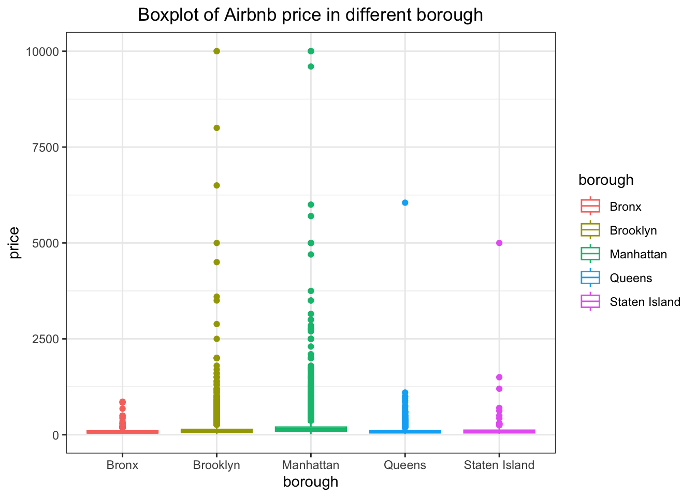

14 Final Review
14.1 Data Loading
-
read_csv: loadcsvdata table locally -
janitor::clean_names(): tidy up the column names of dataframe, it converts names to snake_case, removes special characters, and handles duplicated names.
airbnb = read.csv("./dataset/nyc_airbnb.csv")
airbnb = janitor::clean_names(airbnb)
colnames(airbnb)## [1] "id" "review_scores_location"
## [3] "name" "host_id"
## [5] "host_name" "neighbourhood_group"
## [7] "neighbourhood" "lat"
## [9] "long" "room_type"
## [11] "price" "minimum_nights"
## [13] "number_of_reviews" "last_review"
## [15] "reviews_per_month" "calculated_host_listings_count"
## [17] "availability_365"14.2 Pipe Operator
The pipe operator (%>% or |>) allows for cleaner and more readable code by chaining together a sequence of operations. Instead of nesting functions, the pipe operator allows for a left-to-right flow of data transformations.
airbnb = read_csv("./dataset/nyc_airbnb.csv") %>% janitor::clean_names()
airbnb = read_csv("./dataset/nyc_airbnb.csv") |> janitor::clean_names()
airbnb |> head(10)## # A tibble: 10 × 17
## id review_scores_location name host_id host_name neighbourhood_group
## <dbl> <dbl> <chr> <dbl> <chr> <chr>
## 1 7949480 10 City I… 1.19e5 Linda & … Bronx
## 2 16042478 NA WATERF… 9.12e6 Collins Bronx
## 3 1886820 NA Quaint… 9.82e6 Steve Bronx
## 4 6627449 10 Large … 1.39e7 Arlene Bronx
## 5 5557381 10 Quaint… 2.88e7 Phoebe Bronx
## 6 9147025 10 Cozy C… 4.03e5 Diane Bronx
## 7 11675715 10 Cozy 1… 5.67e7 Josue Bronx
## 8 715270 9 2 Beds… 3.68e6 Enrique Bronx
## 9 17876530 10 Spacio… 1.13e7 Yahaira Bronx
## 10 182177 9 PRIVAT… 8.73e5 Christia… Bronx
## # ℹ 11 more variables: neighbourhood <chr>, lat <dbl>, long <dbl>,
## # room_type <chr>, price <dbl>, minimum_nights <dbl>,
## # number_of_reviews <dbl>, last_review <date>, reviews_per_month <dbl>,
## # calculated_host_listings_count <dbl>, availability_365 <dbl>
14.3 tidyverse
14.3.1 dplyr functions
-
select(): Selects columns from a data frame. -
filter(): Filters rows based on specified conditions. -
mutate(): Adds new variables or transforms existing ones. -
arrange(): Orders rows by specified variables. -
rename(): Renames columns in a data frame.
airbnb |>
filter(neighbourhood_group == "Queens") |>
select(name:price) |>
mutate(price_level = if_else(price >= 500, "Expensive", "Not expensive")) |>
arrange(desc(price)) |>
rename(host = host_name) |>
head(10)## # A tibble: 10 × 10
## name host_id host neighbourhood_group neighbourhood lat long room_type
## <chr> <dbl> <chr> <chr> <chr> <dbl> <dbl> <chr>
## 1 Room i… 1.20e8 Sonia Queens East Elmhurst -73.9 40.8 Private …
## 2 One la… 6.53e7 Bobn… Queens Briarwood -73.8 40.7 Private …
## 3 Magnif… 1.25e8 Sean Queens Briarwood -73.8 40.7 Entire h…
## 4 very n… 6.91e7 Julio Queens Flushing -73.8 40.8 Private …
## 5 Beauti… 1.81e7 Fred… Queens Flushing -73.8 40.8 Entire h…
## 6 Family… 1.23e7 Silv… Queens Flushing -73.8 40.7 Entire h…
## 7 Huge 9… 7.32e7 Siqu… Queens Astoria -73.9 40.8 Entire h…
## 8 3 bedr… 4.65e7 Jack… Queens Jamaica Esta… -73.8 40.7 Private …
## 9 RIDGEW… 1.64e6 Anna Queens Ridgewood -73.9 40.7 Entire h…
## 10 Nice a… 4.55e7 Maria Queens East Elmhurst -73.9 40.8 Private …
## # ℹ 2 more variables: price <dbl>, price_level <chr>14.3.2 pivots
-
pivot_longer(): Converts data from wide to long format. -
pivot_wider(): Converts data from long to wide format.
year <- paste(2001:2020)
team <- letters[1:length(year)]
num <- sample(c(1:100), size = length(year)^2, replace = TRUE)
yr_data <- data.frame(matrix(num, nrow = length(year), ncol = length(year))) |>
set_names(year) |>
mutate(id = row_number())
yr_data## 2001 2002 2003 2004 2005 2006 2007 2008 2009 2010 2011 2012 2013 2014 2015
## 1 59 30 52 30 73 9 56 62 71 42 23 78 86 58 52
## 2 79 73 10 48 55 85 19 53 78 17 81 76 11 85 23
## 3 50 20 82 100 34 8 21 10 37 39 10 7 11 90 48
## 4 67 2 39 99 17 13 90 51 39 11 23 45 84 42 73
## 5 7 11 36 37 47 46 52 68 7 51 84 12 98 6 68
## 6 21 33 58 52 44 16 92 70 88 61 61 54 58 80 71
## 7 53 33 9 1 41 14 28 80 59 11 41 46 54 48 82
## 8 66 57 81 38 49 16 5 79 32 3 67 63 5 5 52
## 9 2 94 62 95 96 21 56 32 85 4 19 61 71 15 56
## 10 40 4 57 35 18 28 40 66 33 22 64 68 27 17 33
## 11 13 17 28 27 49 7 15 13 82 44 24 3 67 35 47
## 12 63 37 17 94 42 99 32 89 37 93 80 66 28 38 25
## 13 37 34 40 64 46 24 78 87 77 72 86 48 56 12 54
## 14 48 51 87 76 88 85 53 21 46 21 70 70 24 65 88
## 15 38 78 44 48 19 63 86 15 69 5 50 70 28 20 20
## 16 67 76 11 93 90 11 1 30 82 63 33 67 10 95 18
## 17 9 83 29 71 75 92 81 85 65 51 22 94 93 83 85
## 18 35 84 25 87 69 9 32 26 100 16 12 13 88 94 92
## 19 30 42 77 96 82 18 86 52 56 68 10 88 32 29 50
## 20 93 65 75 70 44 25 51 80 21 84 58 94 48 64 100
## 2016 2017 2018 2019 2020 id
## 1 57 96 2 30 97 1
## 2 39 23 71 58 83 2
## 3 26 51 100 52 84 3
## 4 85 35 81 3 62 4
## 5 59 5 28 62 34 5
## 6 58 63 27 69 54 6
## 7 90 58 62 18 1 7
## 8 22 13 37 12 45 8
## 9 53 21 40 38 48 9
## 10 34 84 49 61 29 10
## 11 76 98 41 76 94 11
## 12 16 20 32 33 93 12
## 13 12 1 96 37 12 13
## 14 42 18 38 1 63 14
## 15 32 71 63 51 76 15
## 16 50 68 5 89 30 16
## 17 97 67 79 39 33 17
## 18 64 20 44 76 15 18
## 19 14 20 95 48 72 19
## 20 52 93 88 54 98 20
yr_data_long = yr_data |> pivot_longer(cols = paste(2001:2020),
names_to = "year",
values_to = "points")
yr_data_long## # A tibble: 400 × 3
## id year points
## <int> <chr> <int>
## 1 1 2001 59
## 2 1 2002 30
## 3 1 2003 52
## 4 1 2004 30
## 5 1 2005 73
## 6 1 2006 9
## 7 1 2007 56
## 8 1 2008 62
## 9 1 2009 71
## 10 1 2010 42
## # ℹ 390 more rows
yr_data_long |>
pivot_wider(names_from = year, values_from = points)## # A tibble: 20 × 21
## id `2001` `2002` `2003` `2004` `2005` `2006` `2007` `2008` `2009` `2010`
## <int> <int> <int> <int> <int> <int> <int> <int> <int> <int> <int>
## 1 1 59 30 52 30 73 9 56 62 71 42
## 2 2 79 73 10 48 55 85 19 53 78 17
## 3 3 50 20 82 100 34 8 21 10 37 39
## 4 4 67 2 39 99 17 13 90 51 39 11
## 5 5 7 11 36 37 47 46 52 68 7 51
## 6 6 21 33 58 52 44 16 92 70 88 61
## 7 7 53 33 9 1 41 14 28 80 59 11
## 8 8 66 57 81 38 49 16 5 79 32 3
## 9 9 2 94 62 95 96 21 56 32 85 4
## 10 10 40 4 57 35 18 28 40 66 33 22
## 11 11 13 17 28 27 49 7 15 13 82 44
## 12 12 63 37 17 94 42 99 32 89 37 93
## 13 13 37 34 40 64 46 24 78 87 77 72
## 14 14 48 51 87 76 88 85 53 21 46 21
## 15 15 38 78 44 48 19 63 86 15 69 5
## 16 16 67 76 11 93 90 11 1 30 82 63
## 17 17 9 83 29 71 75 92 81 85 65 51
## 18 18 35 84 25 87 69 9 32 26 100 16
## 19 19 30 42 77 96 82 18 86 52 56 68
## 20 20 93 65 75 70 44 25 51 80 21 84
## # ℹ 10 more variables: `2011` <int>, `2012` <int>, `2013` <int>, `2014` <int>,
## # `2015` <int>, `2016` <int>, `2017` <int>, `2018` <int>, `2019` <int>,
## # `2020` <int>14.3.3 joins
-
right_join(): Keeps all rows from the right data frame and matching rows from the left. -
left_join(): Keeps all rows from the left data frame and matching rows from the right. -
inner_join(): Keeps only rows that have matching values in both data frames. -
full_join(): Keeps all rows from both data frames, filling inNAfor missing matches.
data1 <- tibble::tibble(id = 2:3, name = c("John", "Doe"))
data2 <- tibble::tibble(id = 1:2, salary = c(50000, 60000))
# right_join
data1 |> right_join(data2, by = "id")## # A tibble: 2 × 3
## id name salary
## <int> <chr> <dbl>
## 1 2 John 60000
## 2 1 <NA> 50000
# left_join
data1 |> left_join(data2, by = "id")## # A tibble: 2 × 3
## id name salary
## <int> <chr> <dbl>
## 1 2 John 60000
## 2 3 Doe NA
# inner_join
data1 |> inner_join(data2, by = "id")## # A tibble: 1 × 3
## id name salary
## <int> <chr> <dbl>
## 1 2 John 60000
# full_join
data1 |> full_join(data2, by = "id")## # A tibble: 3 × 3
## id name salary
## <int> <chr> <dbl>
## 1 2 John 60000
## 2 3 Doe NA
## 3 1 <NA> 5000014.4 String and Factor
Usage of stringr and forcats package
str_data <- "Hello, World!"
str_length <- str_length(str_data)
str_upper <- str_to_upper(str_data)
fct_data <- factor(c("apple", "banana", "cherry", "apple"))
fct_count <- fct_count(fct_data)
fct_relevel <- fct_relevel(fct_data, "banana", "apple")14.5 EDA
-
case_when: A versatile function for creating new variables based on multiple conditions. -
group_by: Groups data by one or more variables for subsequent operations. -
summarize: Calculates summary statistics for grouped data.
airbnb |>
group_by(neighbourhood_group) |>
summarise(count = n()) |>
arrange(desc(count)) |>
mutate(level = case_when(
count > 10000 ~ "Large",
count > 2000 ~ "Medium",
count > 500 ~ "Small",
.default = "Tiny"
))## # A tibble: 5 × 3
## neighbourhood_group count level
## <chr> <int> <chr>
## 1 Manhattan 19212 Large
## 2 Brooklyn 16810 Large
## 3 Queens 3821 Medium
## 4 Bronx 649 Small
## 5 Staten Island 261 Tinysummary tables with the gtsummary package
airbnb |>
select(c(neighbourhood_group, price)) |>
gtsummary::tbl_summary()| Characteristic | N = 40,7531 |
|---|---|
| neighbourhood_group | |
| Bronx | 649 (1.6%) |
| Brooklyn | 16,810 (41%) |
| Manhattan | 19,212 (47%) |
| Queens | 3,821 (9.4%) |
| Staten Island | 261 (0.6%) |
| price | 100 (70, 170) |
| 1 n (%); Median (IQR) | |
14.6 ggplot
airbnb |>
mutate(borough = neighbourhood_group |> factor()) |>
ggplot() +
geom_boxplot(aes(x = borough, y = price, color = borough)) +
theme_bw() +
labs(
title = "Boxplot of Airbnb price in different borough"
) +
theme(plot.title = element_text(hjust = 0.5))
14.7 Control Statement
if-else
# if-else
x <- 10
if (x > 5) {
result <- "Greater than 5"
} else {
result <- "5 or less"
}-
forloop
for (i in 1:5) {
print(i)
}## [1] 1
## [1] 2
## [1] 3
## [1] 4
## [1] 5-
whileloop
count <- 1
while (count <= 5) {
print(count)
count <- count + 1
}## [1] 1
## [1] 2
## [1] 3
## [1] 4
## [1] 514.8 Function
item_checkout = function(price, n, discount = 1){
return(price * discount * n)
}
fruit_names = c("Apple", "Banana", "Cherry", "Dragonfruit", "Fig", "Kiwi", "Strawberry")
fruit = tibble(
name = fruit_names,
price = runif(length(name), 0, 50),
discount = runif(length(name)),
count = sample(1:100, length(name))
)
fruit |>
mutate(payment = item_checkout(price, count, discount))## # A tibble: 7 × 5
## name price discount count payment
## <chr> <dbl> <dbl> <int> <dbl>
## 1 Apple 39.6 0.955 72 2725.
## 2 Banana 13.1 0.415 23 125.
## 3 Cherry 13.1 0.695 31 283.
## 4 Dragonfruit 49.0 0.0762 59 220.
## 5 Fig 42.0 0.325 56 765.
## 6 Kiwi 13.8 0.789 99 1079.
## 7 Strawberry 20.6 0.331 19 129.